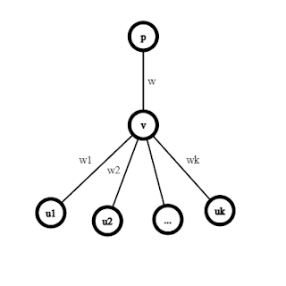

ITREE
Tính chất quan trọng của bài toán: Luôn có một phương án tối ưu mà $a_i$ bằng $0$ hoặc $1$.
Chứng minh: Xét đỉnh $v$ không phải là gốc hoặc lá. Gọi $p$ là cha của $v$; $u_1,u_2,...,u_k$ là các con trực tiếp của $v$.
Tổng trọng số của các cạnh kề $v$ là:
$$C = w\left( {{a_p} - {a_v}} \right) + \mathop \sum \limits_{i = 1}^k {w_i}\left( {{a_v} - {a_{{u_i}}}} \right)$$ $$C = w{a_p} - w{a_v} + \mathop \sum \limits_{i = 1}^k {w_i}{a_v} - \mathop \sum \limits_{i = 1}^k {w_i}{a_{{u_i}}}$$ $$C = w{a_p} - \mathop \sum \limits_{i = 1}^k {w_i}{a_{{u_i}}} + {a_v}\left( {\mathop \sum \limits_{i = 1}^k {w_i} - w} \right)$$
Không mất tính tổng quát, giả sử: ${a_{{u_1}}} \le \ldots \le {a_{{u_k}}}$.
$ \to {a_{{u_k}}} \le {a_v} \le {a_p}$
Nếu $\left( {\mathop \sum \limits_{i = 1}^k {w_i} - w} \right) > 0$ thì $a_v = a_{u_k}$ là tối ưu
Ngược lại, $a_v = a_p$ là tối ưu.
Cây được chia thành nhiều cây con liên thông có cùng nhãn $a_i$, mỗi cây con nén thành một đỉnh đại diện ta được cây mới, lặp lại thao tác trên đến khi nào mọi đỉnh đều có nhãn bằng $0$ hoặc $1$.
Gọi $f\left(v\right)$ là chi phí nhỏ nhất của cây con gốc $v$ nếu $a_v = 1$.
$$f\left( v \right) = \left\{ {\matrix{{ + \infty } & {{\rm{if\;v\;is\;leaf\;vertex}}} \cr {\mathop \sum \limits_{u \in child\left( v \right)} {\rm{min}}\left( {f\left( u \right),w\left( {u,v} \right)} \right)} & {{\rm{otherwise}}} \cr } } \right.$$
Kết quả là $f\left(1\right)$.